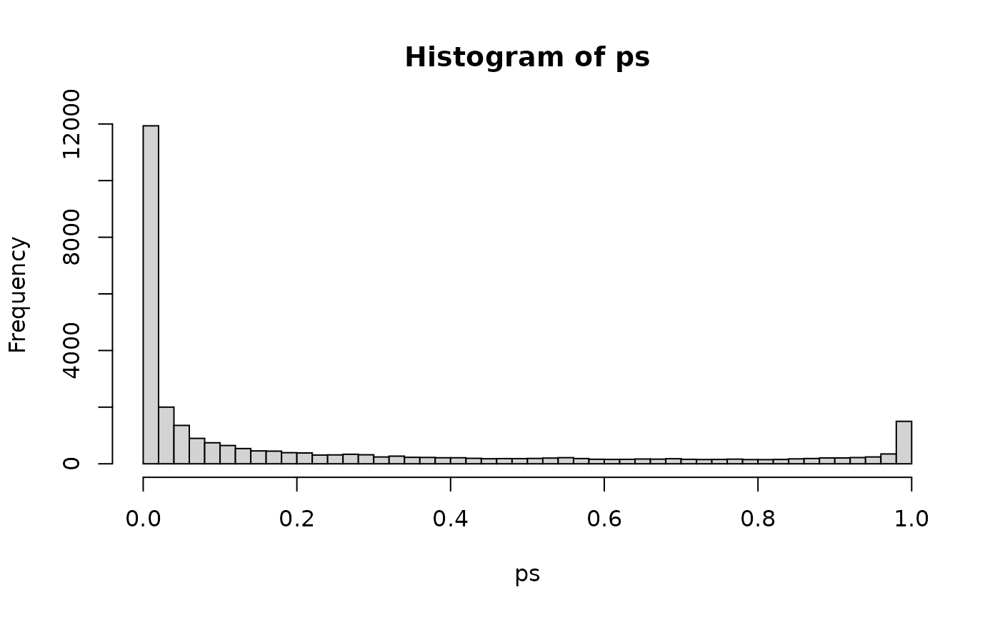

PFAM.Rmd
library(BioPlex)
library(AnnotationDbi)
library(AnnotationHub)
library(graph)Get the latest version of the 293T PPI network:
bp.293t <- BioPlex::getBioPlex(cell.line = "293T", version = "3.0")## Using cached version from 2021-06-03 07:06:54and turn into a graph object:
bp.gr <- BioPlex::bioplex2graph(bp.293t)Annotate PFAM domains to the node metadata:
Connect to AnnotationHub:
ah <- AnnotationHub::AnnotationHub()OrgDb package for human:
## OrgDb object:
## | DBSCHEMAVERSION: 2.1
## | Db type: OrgDb
## | Supporting package: AnnotationDbi
## | DBSCHEMA: HUMAN_DB
## | ORGANISM: Homo sapiens
## | SPECIES: Human
## | EGSOURCEDATE: 2021-Apr14
## | EGSOURCENAME: Entrez Gene
## | EGSOURCEURL: ftp://ftp.ncbi.nlm.nih.gov/gene/DATA
## | CENTRALID: EG
## | TAXID: 9606
## | GOSOURCENAME: Gene Ontology
## | GOSOURCEURL: http://current.geneontology.org/ontology/go-basic.obo
## | GOSOURCEDATE: 2021-02-01
## | GOEGSOURCEDATE: 2021-Apr14
## | GOEGSOURCENAME: Entrez Gene
## | GOEGSOURCEURL: ftp://ftp.ncbi.nlm.nih.gov/gene/DATA
## | KEGGSOURCENAME: KEGG GENOME
## | KEGGSOURCEURL: ftp://ftp.genome.jp/pub/kegg/genomes
## | KEGGSOURCEDATE: 2011-Mar15
## | GPSOURCENAME: UCSC Genome Bioinformatics (Homo sapiens)
## | GPSOURCEURL:
## | GPSOURCEDATE: 2021-Feb16
## | ENSOURCEDATE: 2021-Feb16
## | ENSOURCENAME: Ensembl
## | ENSOURCEURL: ftp://ftp.ensembl.org/pub/current_fasta
## | UPSOURCENAME: Uniprot
## | UPSOURCEURL: http://www.UniProt.org/
## | UPSOURCEDATE: Mon Apr 26 21:53:12 2021
AnnotationDbi::keytypes(orgdb)## [1] "ACCNUM" "ALIAS" "ENSEMBL" "ENSEMBLPROT" "ENSEMBLTRANS"
## [6] "ENTREZID" "ENZYME" "EVIDENCE" "EVIDENCEALL" "GENENAME"
## [11] "GENETYPE" "GO" "GOALL" "IPI" "MAP"
## [16] "OMIM" "ONTOLOGY" "ONTOLOGYALL" "PATH" "PFAM"
## [21] "PMID" "PROSITE" "REFSEQ" "SYMBOL" "UCSCKG"
## [26] "UNIPROT"
bp.gr <- BioPlex::annotatePFAM(bp.gr, orgdb)## 'select()' returned 1:many mapping between keys and columnsDomain-domain association analysis:
unip2pfam <- graph::nodeData(bp.gr, graph::nodes(bp.gr), "PFAM")
pfam2unip <- stack(unip2pfam)
pfam2unip <- split(as.character(pfam2unip$ind), pfam2unip$values)
head(pfam2unip, 2)## $PF00001
## [1] "P28566" "P25106" "P23945" "Q9HBX9" "P16473" "P04201" "Q9HC97" "P30968"
## [9] "Q9Y2T6" "Q14330" "P46089" "Q15391" "Q9BXA5" "Q13304" "P61073" "P21462"
## [17] "P25090" "Q99679" "P21730" "P30556" "P43088" "P32246" "P32249" "Q9Y2T5"
## [25] "Q7Z602" "P43657" "O00398" "Q9H244" "Q86VZ1" "Q9NPB9" "Q99788" "P51684"
## [33] "P35414" "O00590" "Q9H1Y3" "P55085" "O15218" "Q9GZQ4" "P25101" "Q9NS66"
## [41] "Q9NQS5" "P21453" "P14416" "P24530" "P32239" "Q16581" "O00421" "Q9UHM6"
## [49] "Q8N6U8" "P20309" "O15354" "Q9BXC0" "P47775" "P30550" "P49146" "P47900"
## [57] "Q8TDU9" "P25103" "P35372" "P41597" "Q9P296" "P28335" "O95136" "P08173"
## [65] "P29371" "P41146" "P43119" "O95977" "Q9HBW0" "Q99677" "Q9BXB1" "Q8WXD0"
## [73] "O43193" "P30989" "Q8NGU9" "P47901" "P22888" "Q9GZN0" "P21917" "O60755"
## [81] "Q8TDV0" "O43614" "Q9NS67" "P08912" "Q9UPC5" "Q8TDV2" "Q92633" "Q9NQ55"
## [89] "Q13585" "Q9UBY5" "Q9H228" "P28222"
##
## $PF00002
## [1] "Q8IZP9" "P41587" "Q8IZF4" "P49190" "P32241" "P47871" "P48960" "Q8IZF5"
## [9] "O14514" "Q03431" "Q9NYQ6" "Q9HCU4" "Q8WXG9" "Q9NYQ7" "O60242" "O60241"
## [17] "Q9HAR2" "O94910" "Q8IWK6" "O95490" "Q96PE1" "Q86SQ4"
unip2iapfams <- lapply(graph::nodes(bp.gr), function(n) graph::nodeData(bp.gr, graph::edges(bp.gr)[[n]], "PFAM"))
unip2iapfams <- lapply(unip2iapfams, unlist)
names(unip2iapfams) <- graph::nodes(bp.gr)
pfam2iapfams <- lapply(pfam2unip, function(ps) unlist(unip2iapfams[ps]))
pfam2iapfams <- pfam2iapfams[lengths(pfam2iapfams) > 0]
pfam2pfam <- stack(pfam2iapfams)
pfam2pfam$ind <- as.character(pfam2pfam$ind)
pfam2pfam <- pfam2pfam[!is.na(pfam2pfam$values),]
pfam2pfam <- as.matrix(pfam2pfam)
head(pfam2pfam)## values ind
## 1 "PF02874" "PF00001"
## 2 "PF00006" "PF00001"
## 3 "PF02874" "PF00001"
## 4 "PF00006" "PF00001"
## 5 "PF02874" "PF00001"
## 6 "PF00006" "PF00001"4a. initialize + turn pfam2pfam mapping into an integer index mapping for efficiency
pfams <- unique(as.vector(pfam2pfam))
len <- length(pfams)
ia.mat <- matrix(0, nrow = len, ncol = len)
rownames(ia.mat) <- colnames(ia.mat) <- pfams
ind1 <- match(pfam2pfam[,1], pfams)
ind2 <- match(pfam2pfam[,2], pfams)
pfam2pfam <- cbind(ind1, ind2)
head(pfam2pfam)## ind1 ind2
## [1,] 1 178
## [2,] 2 178
## [3,] 1 178
## [4,] 2 178
## [5,] 1 178
## [6,] 2 1784b. loop over all pfam-pfam pair and count the PPIs connecting them:
for(i in seq_len(len))
{
if(i %% 100 == 0) message(i)
p2p <- pfam2pfam[pfam2pfam[,1] == i | pfam2pfam[,2] == i,,drop = FALSE]
if(nrow(p2p))
{
for(j in i:len)
{
if(i == j) ia.mat[i,j] <- sum(p2p[,1] == j & p2p[,2] == j)
else ia.mat[i,j] <- sum(p2p[,1] == j | p2p[,2] == j)
}
}
}## 100## 200## 300## 400## 500## 600## 700## 800## 900## 1000## 1100## 1200## 1300## 1400## 1500## 1600## 1700## 1800## 1900## 2000## 2100## 2200## 2300## 2400## 2500## 2600## 2700## 2800## 2900## 3000## 3100## 3200## 3300## 3400## 3500## 3600## 3700## 3800## 3900## 4000## 4100## 4200## 4300## 4400## 4500## 4600## 4700## 4800## 4900## 5000## 5100## 5200## 5300## 5400Inspect the result:
dim(ia.mat)## [1] 5416 5416
ia.mat[1:5,1:5]## PF02874 PF00006 PF00306 PF02823 PF00213
## PF02874 4 8 1 2 1
## PF00006 0 4 1 2 1
## PF00306 0 0 0 1 0
## PF02823 0 0 0 0 1
## PF00213 0 0 0 0 0## [1] 2281 22816a. Let’s do some precomputations of the margins for efficiency
6b. let’s define a function that computes for each domain pair: 1) the number of interactions connecting both domains; 2) the numbers of interactions involving either domain individually; and 3) the number of interactions not involving either domain
getContingency <- function(p1, p2, m, rs, total)
{
both <- m[p1,p2]
one <- rs[p1] - both
two <- rs[p2] - both
all <- total - one - two
unname(c(both, one, two, all))
}
getContingency("PF02874", "PF00006", m, rs, total)## [1] 8 89 89 1830506c. now let’s get all possible domain pairs and restrict to those pairs connected by at least 2 PPI’s:
combs <- combn(rownames(m), 2)
ind <- apply(combs, 2, function(x) m[x[1], x[2]] > 1)
combs <- combs[,ind]
dim(combs)## [1] 2 291186d. calculate contigency for all remaining domain pairs:
conts <- apply(combs, 2, function(x) getContingency(x[1], x[2], m, rs, total))
conts <- t(conts)
head(conts)## [,1] [,2] [,3] [,4]
## [1,] 8 89 89 183050
## [2,] 2 95 28 183105
## [3,] 3 94 488 182646
## [4,] 15 82 3879 179267
## [5,] 3 94 1575 181559
## [6,] 5 92 4228 178908
fisherp <- function(x) fisher.test(matrix(x, nrow = 2),
alternative = "greater")$p.value
fisherp(conts[1,])## [1] 6.377725e-16## [1] 6.377725e-16 1.194922e-04 2.339281e-03 2.382686e-09 5.183170e-02
## [6] 7.463328e-02
hist(ps, breaks = 50)
adjp <- p.adjust(ps, method = "BH")RESULT:
res <- data.frame(PFAM1 = combs[1,],
PFAM2 = combs[2,],
PVAL = ps,
ADJ.PVAL = adjp)
res <- res[order(ps),]
head(res)## PFAM1 PFAM2 PVAL ADJ.PVAL
## 29095 PF00227 PF10584 3.174323e-213 9.242994e-209
## 22223 PF00096 PF02023 1.401595e-158 2.040582e-154
## 4177 PF08266 PF00028 2.023701e-157 1.964204e-153
## 11246 PF00400 PF00118 5.480606e-136 3.989607e-132
## 4062 PF15974 PF08266 8.734846e-125 5.086825e-121
## 4063 PF15974 PF00028 3.371853e-117 1.636360e-113
library(PFAM.db)##
id2de <- as.list(PFAMDE)What are the top 10 interacting domains:
## [,1]
## PF00227 "Proteasome subunit"
## PF00096 "Zinc finger, C2H2 type"
## PF08266 "Cadherin-like"
## PF00400 "WD domain, G-beta repeat"
## PF15974 "Cadherin C-terminal cytoplasmic tail, catenin-binding region"
## PF15974 "Cadherin C-terminal cytoplasmic tail, catenin-binding region"
## PF08266 "Cadherin-like"
## PF00631 "GGL domain"
## PF00028 "Cadherin domain"
## PF05739 "SNARE domain"
## [,2]
## PF00227 "Proteasome subunit A N-terminal signature"
## PF00096 "SCAN domain"
## PF08266 "Cadherin domain"
## PF00400 "TCP-1/cpn60 chaperonin family"
## PF15974 "Cadherin-like"
## PF15974 "Cadherin domain"
## PF08266 "Cadherin cytoplasmic C-terminal"
## PF00631 "G-protein alpha subunit"
## PF00028 "Cadherin cytoplasmic C-terminal"
## PF05739 "Synaptobrevin"Can we do some of this vectorized ?
.f <- function(x, rs, total)
{
one <- rs[1] - x
two <- rs[2] - x
all <- total - one - two
cbind(x, one, two, all)
}